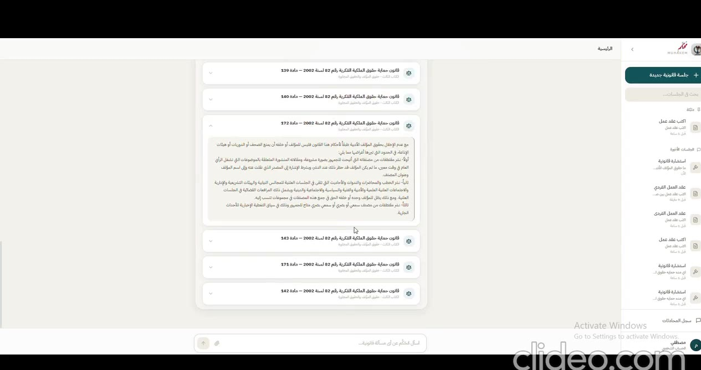
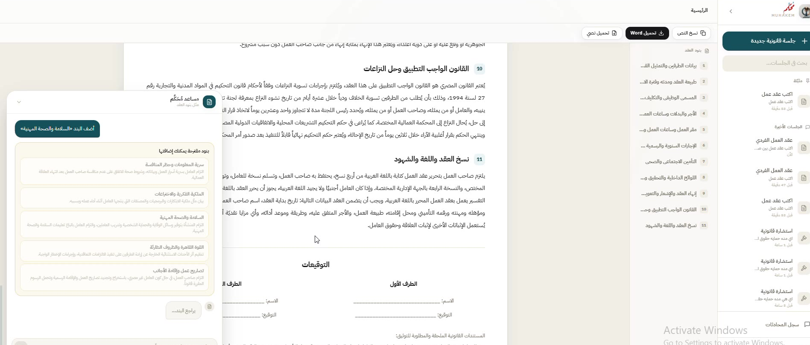
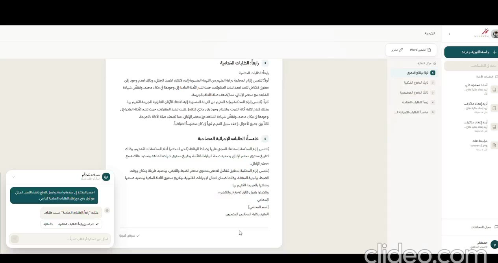
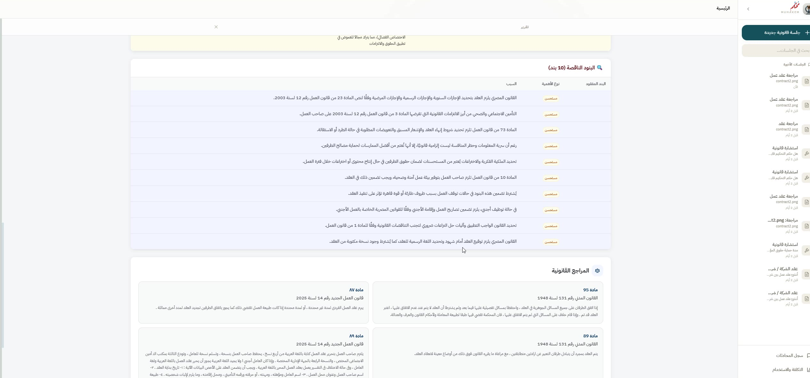

Legal consultation
أسئلة قانونية باللغة العربية مع إجابات منظمة ومراجع قانونية مرتبطة بالسياق.
Research · RAGARABIC-FIRST · EGYPTIAN LEGAL WORKFLOWS
مُحكِّم مساحة عمل قانونية تجمع البحث والاستشارة، إنشاء العقود، إعداد مذكرات الدفاع، ومراجعة المستندات في تجربة واحدة قابلة للمراجعة.
THE IDEA
Built for legal professionals who need faster access to Egyptian legal knowledge without losing the ability to inspect, correct, and own the final reasoning.
PRODUCT WORKFLOWS
Four focused paths, one coherent legal workspace.
أسئلة قانونية باللغة العربية مع إجابات منظمة ومراجع قانونية مرتبطة بالسياق.
Research · RAGصياغة العقود مع إمكانية إضافة البنود وتعديلها وحذفها بندًا بندًا.
Drafting · Editableتحويل الوقائع والأدلة والدفوع إلى مذكرة دفاع منظمة وقابلة للمراجعة.
Classification · Validationاستخراج البنود وتحليل المخاطر وإظهار الأساس القانوني ومؤشرات الثقة.
OCR · Clause analysisPRODUCT IN ACTION
Captured from the project prototype. Examples are presented for demonstration only.




RESEARCH ARCHITECTURE
The system separates routing, retrieval, generation, document processing, and validation. This makes the experience adaptable across online, hybrid, and local deployment modes.
ABOUT THE PROJECT
Muhakem was developed as a graduation project by a five-member team within the Digilians 9 Months Diploma in AI and Data Science. It is designed to assist—not replace—qualified legal professionals.
Read the documentation ↗